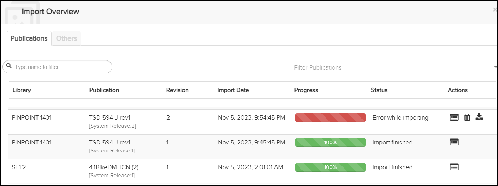
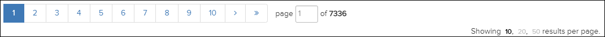

Not applicable for Pinpoint Standalone Light.
- Library
- Publication (includes System Release number)
- Revision
- Import Date
- Progress
- Status
- Actions
If you set the Download the Latest Revisions option in the Configuration pane to Manually, the Import Overview icon shows the number of publications available to download. These publications appear in the Import Overview dialog as Ready to Download. You can control the download process of the publications by pausing, resuming, and stopping the download.
- If the page width is less than or equal to 1280 pixels, the
 Import
Overview icon appears in the
Import
Overview icon appears in the
 More drop-down menu. Both the
More icon and the
Import Overview icon blink while
the import is in progress. Once the import is complete, the icons stop
blinking.
More drop-down menu. Both the
More icon and the
Import Overview icon blink while
the import is in progress. Once the import is complete, the icons stop
blinking. - If the page width is greater than 1280 pixels, only the
Import Overview
icon
blinks while the import is in progress. Once the import is
complete, the icon stops blinking.
To view the import publication statuses, do these steps:
-
Click the
Import
Overview
icon in the Action Bar.
The Import Overview dialog appears.

Note: The list of publication revisions is auto-refreshed in 1-minute intervals.If there are more than 10 documents returned, the list will be paginated. You can navigate between the pages using the number buttons located above and below the result list. Alternatively, you can type the page number directly in the Page field. You can also select how many results to display per page: 10 (default), 20 or 50.

-
Optional. Click the
 Log icon for a publication.
The Import Logs for the selected publication appears.
Log icon for a publication.
The Import Logs for the selected publication appears. -
Click the
 Rollback icon to rollback a publication from Data Manager.
Rollback icon to rollback a publication from Data Manager.
If you rollback a publication revision, that will restart the publication import process. You can view the process logs by clicking the
Log icon for the publication.Note: Flatirons Solutions suggests that you not rollback publications that are importing without issues. This might lead to data corruption. -
Click the
 Start/Resume Download icon to start a download or resume a paused
download.
When you select the Start download option, the publication is added to the download queue, for example:
Start/Resume Download icon to start a download or resume a paused
download.
When you select the Start download option, the publication is added to the download queue, for example:
-
Click the
 Pause Download icon to pause a download.
When you select this option to pause the download, no further action can be taken on the download until the pause process is complete. After that process completes, you can select the
Resume Download icon to resume the download.
Pause Download icon to pause a download.
When you select this option to pause the download, no further action can be taken on the download until the pause process is complete. After that process completes, you can select the
Resume Download icon to resume the download.